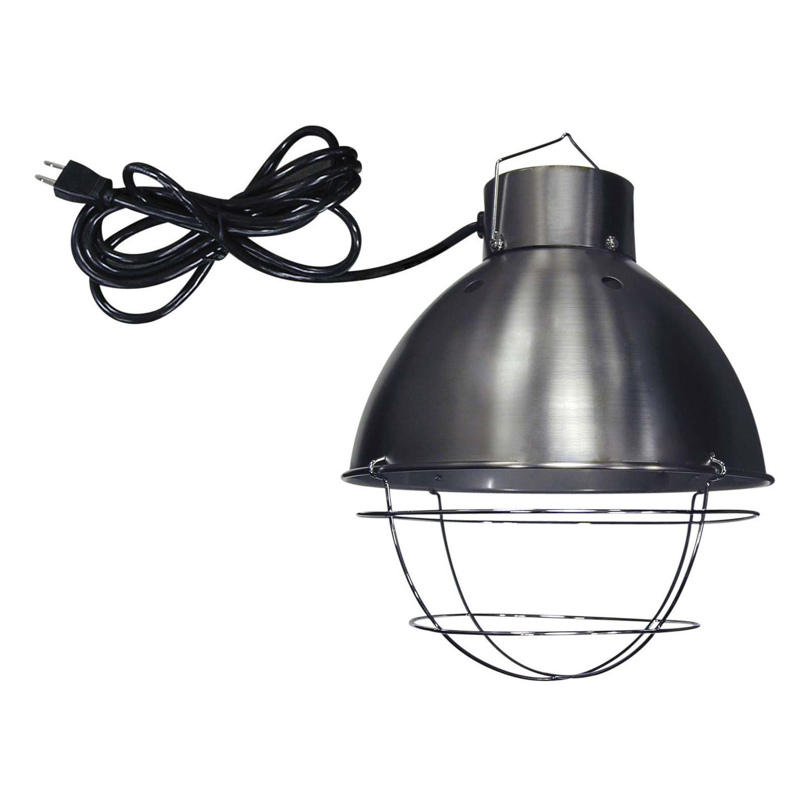
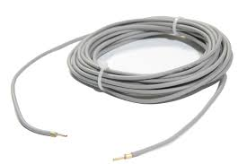

Chauffage
Comment chauffer de façon efficace et fiable mon terrarium ?
Comme les reptiles ne peuvent pas générer leur propre chaleur corporelle (on les appelle donc des animaux ectothermes), il est donc très important de leur fournir une source de chaleur en tout temps, en plus ou moins grande quantité selon leur besoins et leur milieu d'origine (désertique, tropicale, tempéré, etc...).
Il faut donc que l'animal puisse gérer sa température en choisissant d'aller se réchauffer (on appelle cette zone le point chaud) ou refroidir (dans une partie appelée le point froid).
Nous aurons donc besoin d'une source fiable de chaleur située dans l'un des cotés du terrarium, ainsi que d'un thermomètre pour gérer la chaleur selon les besoins de l'animal.
Il existe plusieurs types de sources de chaleur, comme :
Les tapis chauffants, disponibles en différentes tailles et puissances, ils offrent une bonne source de chaleur en dessous du terrarium.
 Les lampes chauffantes, qui existent en deux types principaux, les incandescentes (plus utilisées dans un milieu humide) et les halogènes (peu chères et utilisées dans les environnements secs très chauds). Elles ont aussi l'avantage de pouvoir offrir des UVBs (un genre de rayons ultraviolets) aux animaux, qui est important pour produire de la vitamine D3 et ainsi absorber le calcium nécessaire a leur développement.
 Les rubans chauffants, qui fonctionnent de facon similaire aux tapis chauffants. Ils sont disponibles en différentes tailles, et sont placés à l'éxterieur ou à l'interieur du terrarium. Certaines variantes résistantes à l'eau sont utilisées dans les terrariums humides.